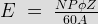
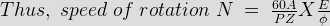
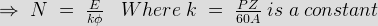
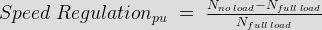

On application of load the speed of a dc motor decreases gradually. This is not at all desirable. So the difference between no load and full load speed should be very less. The motor capable of maintaining a nearly constant speed for varying load is said to have good speed regulation i.e the difference between no load and full load speed is quite less. The speed regulation of a permanent magnet DC motor is good ranging from 10 - 15% whereas for dc shunt motor it is somewhat less than 10 %. DC series motor has poor value of regulation. In case of compound DC motor the speed regulation for dc cumulative compound is around 25 % while differential compound has its excellent value of 5 %.
Speed of a DC Motor
The emf equation of DC motor is given by

Here N = speed of rotation in rpm.
P = number of poles.
A = number of parallel paths.
Z = total no. conductors in armature.


Hence, speed of a DC motor is directly proportional to emf of rotation (E) and inversely proportional to flux per pole (φ).
Speed Regulation of a DC Motor
The speed regulation is defined as the change in speed from no load to full load, expressed as a fraction or percentage of full load speed.
Therefore, as per definition per unit (p.u) speed regulation of DC motor is given as,

Similarly, percentage (%) speed regulation is given as,
Where Nno load = no load speed and Nfull lod = full load speed of DC motor.
Therefore, Percent speed regulation = Per unit (p.u) speed regulation X 100 %.
A motor which has nearly constant speed at all load below full rated load, have good speed regulation.
 by
by